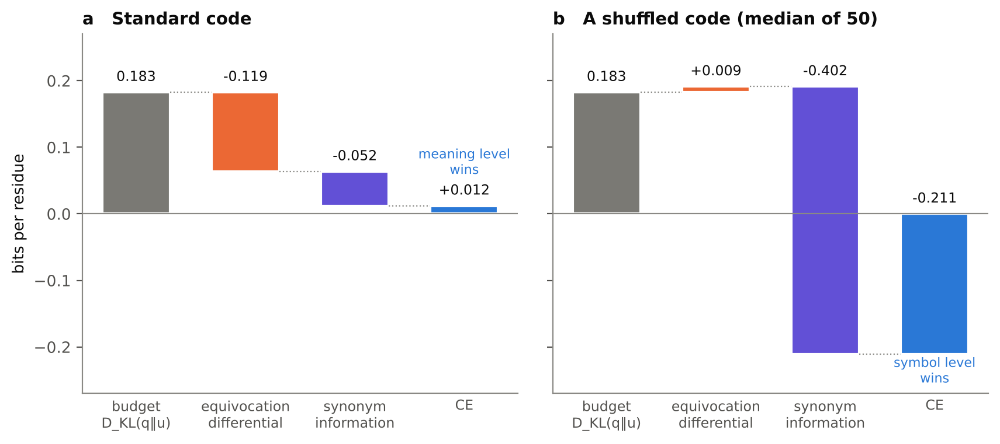
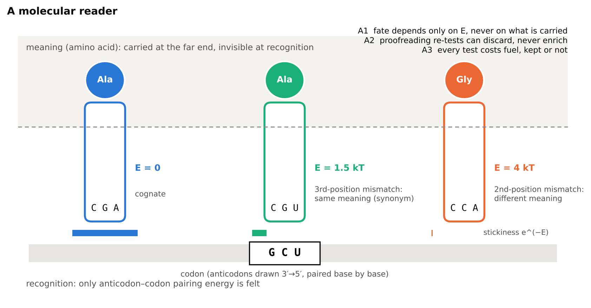
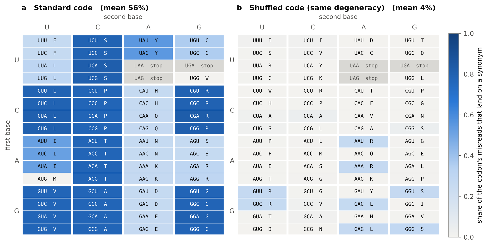
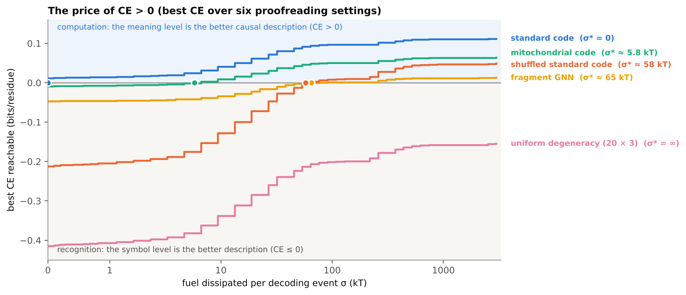
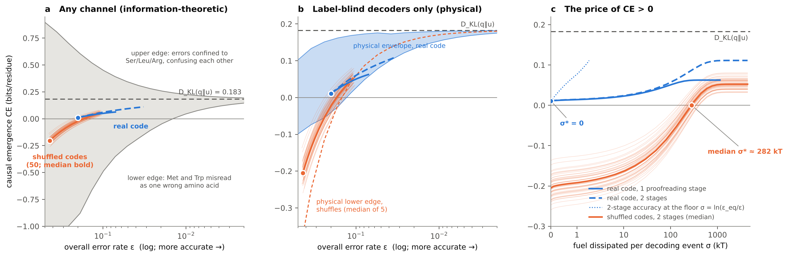
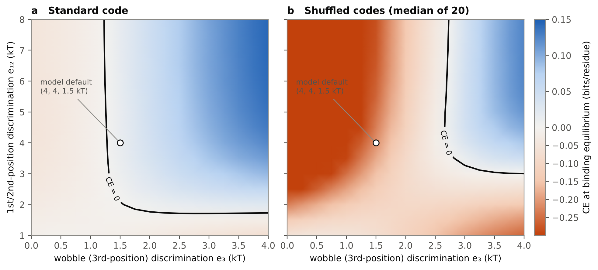

The free energy cost of implementing a code through biochemistry
2026-11-04 · Joseph Murphy Brisendine and Claude (Anthropic)
Correspondence: josephbrisendine@gmail.com
Abstract
A molecular code maps many symbols onto fewer meanings, yet the molecules that read it feel only binding energies. We ask when such a reading process is better described, causally, at the level of meanings than at the level of symbols, and what that costs in free energy. We take causal emergence (CE) — the gain in effective information from describing a channel at the macro rather than the micro scale — as the measure, and separate three layers.
Mathematics. For any code and any noise, CE splits exactly into three terms: a noiseless value D_KL(q‖u), which measures how uneven the degeneracy is; an equivocation differential; and an error-borne synonym information, which has an exact rate/profile split and a first-order form as a single relative entropy. Uneven degeneracy is necessary: if every meaning has the same number of symbols, CE ≤ 0 under any noise. Over arbitrary channels, D_KL(q‖u) is not an upper bound. Every positive CE is an intervention effect: with one intervention distribution held fixed across scales, CE ≤ 0. We therefore read uniform intervention at each scale as the score of a partition by an ideal interpretant that demands every meaning equally. The decomposition makes that choice exact.
Physics. Three axioms state what a molecular reader can do: recognition is label-blind (a candidate's fate depends only on its binding energy with the symbol), driven proofreading only suppresses, and cost is paid per test. Under these axioms, every reader is an energy kernel. The set of reachable CE collapses to a narrow band, which numerically never exceeds D_KL(q‖u). The least driving affinity for CE > 0 has a rigorous label-blind lower bound A*. It is of order kT, and well approximated by |CE_eq|/s: the ratio of the equilibrium deficit to a label-blind susceptibility.
Definitions. Chemistry becomes computation when a reader obeying the axioms has CE > 0. The central quantity is σ*, the least dissipation at which a reader's channel becomes CE-positive: the cost of running a code. In the limiting case σ* = 0 this holds at binding equilibrium, with no fuel, and we call the code free. Under ribosome-like pairing, degeneracy-preserving shuffles of the genetic code need σ* of tens of kT per decoding event, with driving affinities bounded below by a label-blind minimum of about 1 kT; the standard code needs none.
For the standard genetic code with position-independent pairing chemistry, the channel is CE-positive at equilibrium provided G·U-compatible mismatches carry some penalty, most cheaply at the first two codon positions. With that penalty at 0.25–2 kT, non-wobble mismatches need to cost roughly 1–2.5 kcal/mol; the requirement grows without bound as the penalty vanishes, and third-position wobble can then be entirely free. This can happen despite roughly 40% amino-acid misreading, because the assignment map routes the chemically easy errors onto synonyms. Degeneracy-preserving shuffles of the code essentially never become CE-positive.
1. Introduction
A code is a many-to-one map from symbols to meanings that the chemistry itself does not contain. In translation, a codon pairs with an anticodon, and the amino acid rides at the far end of an adaptor. Nothing at the point of recognition interacts with the amino acid; the map from codon to amino acid is carried by which adaptor happens to be charged with what. This is the sense in which the genetic code is a code and not a chemistry: the meaning is causally downstream and physically invisible at the step that reads the symbol.
That raises a question which can be made quantitative. When is a process that discriminates only by binding energy nonetheless better described at the level of meanings than at the level of symbols? And what does it cost, in free energy, to reach that point? We call this crossing the point at which chemistry becomes computation. Before it, the reading process is best described as noisy molecular recognition. After it, it is best described as a map from symbols to meanings, carried out by molecules.
Three ingredients make the question precise:
A measure. Causal emergence (CE; Hoel, Albantakis & Tononi 2013) compares the effective information of a channel at a macro scale and at a micro scale. It is positive when the coarse description carries more causal power than the fine one. We apply it to the channel from symbols to meanings, coarse-graining only the inputs.
A physics. We impose three axioms on what a molecular reader can do. The most important is label-blindness: a reader's treatment of a candidate depends only on its binding energy with the symbol, never on the meaning it carries. A reader that violates it would presuppose the meaning it is supposed to implement.
A cost. Driven error correction (kinetic proofreading; Hopfield 1974, Ninio 1975) lets a reader exceed equilibrium discrimination by dissipating fuel. Its price, σ*, is the least dissipation at which CE turns positive.
The paper is organized to keep these layers separate. Section 3 collects results that are pure mathematics: they hold for every code and every channel. Section 4 states the physical axioms and derives what follows from them. Section 5 uses both layers to define computation, its price σ*, and free codes. Section 6 works through the genetic code. Section 7 sorts every result into mathematics, physics, or conjecture. Section 8 concludes.
This framing differs from two familiar ones. Error-minimization analyses of the genetic code (Freeland & Hurst 1998) ask how well the assignments buffer errors. Rate-distortion models of code emergence (Tlusty 2007) ask when a noisy channel supports a non-trivial code. Kinetic models show that a code can emerge even when adaptors are charged unselectively (Lehmann, Cibils & Libchaber 2009). Here the question is when the meaning-level description becomes the causally better one, and at what thermodynamic price. That question is partly answered by mathematics alone, and partly by what molecules can and cannot do.
2. Setting
Coding system. A coding system has N symbols s, m < N meanings a, and a surjective code map g. Meaning a has n_a synonyms. Its degeneracy weight is q_a = n_a/N, and u_a = 1/m is the uniform distribution over meanings.
Channel. Reading is a channel from symbols to the meaning read, Y. Each row Y_s = P(Y | S = s) is a distribution over the m meanings, written as a correct read plus an error part:
Here e_s is the symbol's error rate and π_s its error profile. Within meaning a, ē_a is the mean error over synonyms, w_s = e_s/(n_a ē_a) is each synonym's share of the errors, and π̄_a = Σ_s w_s π_s is the pooled profile. The overall error rate is ε = Σ_a q_a ē_a.
Effective information. EI is the mutual information between cause and effect when the cause is set by the maximum-entropy intervention distribution (Hoel et al. 2013). Write I_p(M) for the mutual information of a channel M under input distribution p.
Micro scale: EI_micro = I(S;Y), with S uniform over the N symbols.
Macro scale: coarse-grain the inputs only. The macro channel is the pooled synonym row, M_a = (1/n_a) Σ_{g(s)=a} Y_s = (1 − ē_a)δ_a + ē_a π̄_a. Then EI_macro = I_u(M), with A uniform over meanings.
Causal emergence: CE = EI_macro − EI_micro.
Remark (intervention distributions). Three choices are available:
(a) Uniform at each scale. This is Hoel's choice, and the one used here, as a diagnostic.
(b) One distribution held fixed for both scales. The macro intervention is the push-forward of the micro one. This choice gives CE ≤ 0 always (Corollary 0).
(c) Interventions grounded in the system. For example, the distribution of symbols the chemistry actually supplies.
Under (a), CE scores a partition from the standpoint of an ideal interpretant: one that demands every meaning equally. Section 3 makes explicit which part of the result depends on this choice and which part is a property of the physical channel.
Output alphabet. The output alphabet is meanings at both scales; only what is intervened on changes. This is a choice of interpretant: the output is what the downstream system distinguishes, here the meaning delivered. Coarse-graining a symbol-to-symbol channel at both ends would instead let the micro scale distinguish outputs the downstream system cannot, giving it a spurious log N advantage.
Units. Logs are base 2 unless stated. Small-error expansions are derived in nats. Energies are in units of kT, so one nat of relative entropy and one kT of free energy are directly comparable. D(·‖·) is relative entropy, H is entropy, and h is binary entropy.
3. Mathematical structure
Everything in this section holds for every finite code and every channel. No physics is assumed.
3.1 The exact decomposition
Theorem 1. For any coding system and any channel:
Proof. Let S be uniform and A = g(S); then A has distribution q, and P(Y | A = a) = M_a. Since A is a function of S, I(S;Y) = I(S,A;Y) = I_q(M) + I(S;Y|A) by the chain rule. Hence CE = I_u(M) − I_q(M) − I(S;Y|A). Writing I_p(M) = H(p) − H_p(A|Y) for p = u and p = q, and using H(u) − H(q) = D_KL(q‖u), gives the stated form. ∎
Corollary 0 (single distribution). Intervene on symbols with any distribution p_S, and on meanings with its push-forward p_A, instead of re-uniformizing at the macro scale. The same chain rule gives:
The same holds with channel capacity in place of EI. Every positive CE therefore comes from re-weighting interventions at the macro scale.
Theorem 1′ (arbitrary symbol usage). For any p_S, with macro rows M^p_a = Σ_{g(s)=a} p(s|a) Y_s:
Here the micro scale uses p_S and the macro scale is uniform over meanings. The noiseless value becomes D_KL(p_A‖u): the unevenness of meaning usage, not of degeneracy. The two coincide when symbols are used uniformly, as with random templates. Where the CE budget lives therefore depends on what generates the inputs. With random templates it is degeneracy; once template composition is shaped, it migrates to usage. The rest of this paper takes uniform symbol usage, so p_A = q.
The first two terms together, I_u(M) − I_q(M), compare one physical channel under two intervention distributions: uniform over meanings, and weighted by usage. All of the macro scale's advantage lives there. The third term is how much the output still reveals which synonym was read once the meaning is known. It is a degeneracy-weighted Jensen–Shannon divergence of synonym rows, and it vanishes when synonyms are read alike:
Term 2 is the lumpability defect of the reader with respect to the code partition. It vanishes iff every synonym's row is identical, which is exact lumpability in the sense of Kemeny and Snell. It is intrinsic to the physical channel. Term 1 is where the extrinsic choice of interventions enters.

Figure 1. Theorem 1 as a budget. It starts from the noiseless value D_KL(q‖u), subtracts the equivocation differential and the synonym information, and ends at CE. Both codes are read at binding equilibrium (Boltzmann kernel) with mismatch penalties of 4, 4 and 1.5 kT at the three positions. (a) For the standard code, both noise terms are modest and CE stays positive (+0.012 bits). (b) A degeneracy-preserving shuffle has the same budget and an equivocation differential near zero, but its synonyms fail into many different meanings. Synonym information (0.40 bits) then exceeds the whole budget and CE = −0.21 bits.
3.2 Corollaries
Corollary 1 (noiseless value). If reading is noiseless, CE₀ = log m − H(q) = D_KL(q‖u). Degeneracy alone sets the causal advantage of the meaning level when nothing goes wrong.
Corollary 2 (uniform degeneracy). If q = u, then under any noise CE = −I(S;Y|A) ≤ 0, with equality iff synonym rows are identical within every meaning. Uneven degeneracy is necessary for CE > 0. This is the case of Corollary 0 in which uniform intervention over symbols already pushes forward to uniform over meanings, so only the lumpability defect remains. It follows that one-to-one codes (n_a = 1 for all a) have CE ≡ 0: there is no macro scale. Block codes (meaning = the first k symbol positions) under position-additive noise also have CE ≡ 0, because their synonyms are read identically.
Proposition 3 (no ceiling over arbitrary channels). CE can exceed D_KL(q‖u). By Theorem 1:
This happens when errors concentrate in over-represented meanings, which usage weights more heavily than uniform intervention does. Example: seven symbols with meanings of 3, 1 and 3 synonyms. Let the two 3-fold meanings confuse each other at rate x, read the singleton perfectly, and read synonyms alike. Then D_KL(q‖u) = 0.136 bits, but CE = 0.191, 0.226, 0.274 and 0.304 bits at x = 0.05, 0.1, 0.2 and 0.3. D_KL(q‖u) is the noiseless asymptote, approached from below or above.
3.3 Synonyms that fail alike
Proposition 4 (exact rate/profile split).
Here ⟨·⟩_a averages over the synonyms of a, and JS_w(π) = H(π̄_a) − Σ_s w_s H(π_s). Proof: apply the grouping property of entropy (Cover & Thomas) to each row, H(Y_s) = h(e_s) + e_s H(π_s), and to the pooled row, H(M_a) = h(ē_a) + ē_a H(π̄_a). ∎ Both parts are non-negative. Synonym information comes from synonyms erring at different rates, or into different wrong meanings.
Corollary 5 (first order). Expanding h(e) = e ln(1/e) + e + O(e²) gives h(ē) − ⟨h(e_s)⟩ = ē·D(w‖u_syn) + O(ε²), with u_syn uniform over synonyms. By the chain rule for relative entropy, the two parts merge (in nats):
P_a is the joint distribution of which synonym errs and into what. The reference u_syn ⊗ π̄_a is the null model of synonyms failing alike. To first order, synonym information is the error rate times the divergence of real failures from that null.
3.4 The equivocation differential at small error
Proposition 6. For any input distribution p with all p_a > 0, in nats:
Proof sketch: H_p(A|Y) = H(p) + Σ p_a H(M_a) − H(pM). Use the grouping form of H(M_a), expand h, and expand H(pM) to first order around H(p); this needs p bounded away from 0. Collect terms with H(π̄) + Σ_b π̄(b) ln p_b = −D(π̄‖p). ∎
Corollary 7 (sign of the approach). Only the ln(1/ē) piece is non-analytic. Writing ē_a = κ_aε:
So CE approaches D_KL(q‖u) from below exactly when more degenerate meanings are more robust (a > 0). Codes whose large synonym families absorb errors satisfy this generically; the example of Proposition 3 has the opposite covariance. At error rates of a few percent or more, the O(ε) terms of Proposition 6 are as large as the logarithmic term, and the full first-order expression should be used.
4. Physical axioms and their consequences
Section 3 allows any channel. A molecular reader cannot realize most of them. This section states what a reader can do, as three axioms, and derives the consequences. Reading is modelled as competition among candidate adaptors c for a symbol s. Each candidate has a binding (mismatch) free energy D(s,c) ≥ 0 relative to the cognate pair, and the meaning delivered is g(c).
4.1 The axioms
A1, label-blind recognition. The rate at which candidate c is accepted on symbol s depends on (s, c) only through D(s,c). Two equally sticky candidates are treated alike, whatever meaning they carry.
A2, suppression only. Driven re-testing (proofreading) can discard a candidate but never enrich it above its undriven acceptance rate.
A3, pay per test. Free energy is dissipated per binding-and-discard event, not per unit change in the output distribution. The reader does not know in advance which candidate is right.

Figure 2. A molecular reader. Three candidate adaptors compete for the codon GCU. The reader feels only the pairing energy E between anticodon and codon, drawn as stickiness e^(−E). The amino acid each adaptor carries sits outside what recognition can see.
The cognate adaptor (E = 0) and a third-position near-cognate (E = 1.5 kT) both deliver Ala. When the near-cognate is accepted, the misread costs nothing at the level of meaning.
A second-position near-cognate (E = 4 kT) delivers Gly, a different meaning.
By A1, the reader can tell the Gly adaptor from the synonymous near-cognate only through their pairing energies. Whether chemically easy errors are harmless is decided entirely by the code.
A1 is the physical content of the statement that the meaning is invisible at recognition. A channel that violates it treats candidates differently according to what they carry. Any bound or envelope computed over such channels presupposes access to meaning, which makes it circular for a question about the origin of meaning. A1 also keeps the intervention question honest at the recognition step. The reader cannot itself re-weight by meaning, so the only re-weighting in CE is the explicit one in Term 1. A2 and A3 express that error correction works by re-applying the same energetic test at a cost, not by inspecting the answer.
4.2 Readers are energy kernels
Proposition 8. Under A1, a reader that uses one mechanism for all symbols has read distribution T_s(c) ∝ h(D(s,c)), where h is a single non-negative function of binding energy. At binding equilibrium with no fuel, h₀(E) = e^(−E).
Proof: by A1 the acceptance flux of c on s is a function φ_s(D(s,c)). A single mechanism means φ_s = h for all s. Normalizing over candidates gives T. ∎
The space of physically possible readers is therefore small: one function on the handful of distinct energy levels the pairing geometry allows. With three positions and one penalty per position, there are at most eight levels.
4.3 Suppression, and a proved instance
Lemma 9. In the n-stage Hopfield proofreading scheme with affinity Δμ per stage, every candidate's product flux satisfies e^(−nΔμ) J_c⁰ ≤ J_c ≤ J_c⁰, where J_c⁰ is the flux at Δμ = 0. Hence D(T_s‖T_s⁰) ≤ nΔμ for every symbol.
Proof: the steady state solves A p = b with A an M-matrix independent of Δμ, so A⁻¹ ≥ 0 entrywise. Fuel enters only through the fuel-free entry rates into the activated states, b_k ∝ e^(−kΔμ). Componentwise e^(−nΔμ) b(0) ≤ b(Δμ) ≤ b(0), and positivity carries the bounds to J_c = w p_n. The KL bound follows because each log-enrichment ln(T_c/T_c⁰) lies in [−nΔμ, nΔμ]. ∎
So the Hopfield class satisfies A2, and the total affinity A = nΔμ caps how far any candidate's weight can move relative to equilibrium.
4.4 The label-blind affinity bound
Theorem 10. Let A* be the least A such that some function f of energy level, with ln f ∈ [−A, 0], gives CE(h₀·f) ≥ 0, where h₀ is the reader's own undriven (Δμ = 0) kernel. Then no reader satisfying A1 and the suppression bound of Lemma 9 is CE-positive with total affinity below A*.
It follows directly from Proposition 8 and Lemma 9. For small A, max CE ≈ CE_eq + A·s, where the label-blind susceptibility s = Σ_k max(0, −∂CE/∂ln f_k) is the most CE one kT of affinity can buy at equilibrium. Hence:
A* is the equilibrium deficit divided by a susceptibility; both are properties of the code and the pairing geometry. Because one nat trades for one kT, an O(1) result here is the expected scale of a correct accounting. A result far below kT signals a channel that violates A1. A result far above kT signals overhead in a particular mechanism, not in the code.
4.5 The physical envelope
At fixed error rate ε, the set of CE values reachable by label-blind energy kernels (h non-increasing in E) is the physical envelope. It is much narrower than the information-theoretic envelope of Section 3. Section 6 quantifies this for the genetic code.
4.6 Fuel versus affinity
Lemma 9 bounds the output shift by the affinity nΔμ, not by the fuel actually dissipated. A3 suggests that fuel per product usually exceeds affinity, because each product is preceded by several paid re-tests. This held in every case in Section 6.3, but it is not guaranteed: a product can also enter the final state through a fuel-free channel (Section 7). A fuel bound D(T_s‖T_s⁰) ≤ σ_s would follow from a per-candidate inequality, ln(T_c/T_c⁰) ≤ σ_c, where σ_c is the fuel spent on c-attempts per c-product. This holds numerically in every case tested (Section 7) but is not yet proved.
5. Definitions: when chemistry becomes computation
The two layers combine into three definitions. Each says what is required, and of which kind.
Definition 1 (molecular reader). A molecular reader of a code g is a channel from symbols to meanings realized by candidate adaptors competing for each symbol. It satisfies axioms A1–A3, and its only access to the meaning g(c) is that the accepted adaptor delivers it.
Definition 2 (computation). A molecular reader computes the code g when CE > 0: intervening on meanings gives more effective information about what is delivered than intervening on symbols. Before this point the process is best described as noisy molecular recognition. After it, the map from symbols to meanings is the causally better description of what the chemistry does.
What Definition 2 requires, and of which kind:
| Requirement | Kind | Source |
|---|---|---|
| Many-to-one map (m < N) | Mathematics | One-to-one codes have CE ≡ 0 (Corollary 2) |
| Uneven degeneracy, q ≠ u | Mathematics | Uniform degeneracy gives CE ≤ 0 under any noise (Corollary 2) |
| Deficit small enough: equivocation differential plus synonym information below D_KL(q‖u) | Mathematics | Theorem 1 |
| Recognition only through binding energy | Physics | Axiom A1; readers are energy kernels (Proposition 8) |
| Alignment between the code map and the recognition geometry: chemically easy errors land on synonyms | Physics and code jointly | Only this lets a label-blind kernel keep the deficit small |
| Enough discrimination, from binding energy or from fuel | Thermodynamics | Theorem 10 |
The last two rows are where a particular code meets a particular chemistry. Mathematics fixes the budget, D_KL(q‖u). Physics fixes the set of reachable readers. Whether the budget can be realized depends on whether the code's assignments are arranged so that what the chemistry finds hard to tell apart, the code treats as the same. This sets up a trade-off between uneven degeneracy and synonym coherence. More uneven degeneracy enlarges the budget, but it typically requires families whose members are scattered across the recognition geometry, and scattered synonyms fail into different meanings, which costs synonym information.

Figure 3. Alignment between code and chemistry. Each codon is shaded by the share of its misreads, at binding equilibrium with penalties of 4, 4 and 1.5 kT, that deliver a synonym. (a) In the standard code, 56% of misreads are synonymous on average. Whole boxes are dark wherever four codons share an amino acid, because the cheapest misread, at the third position, stays inside the box. (b) A shuffle with identical degeneracy averages 4%. Singletons such as Met (AUG) and Trp (UGG) are 0% by construction: they have no synonyms to absorb errors.
Definition 3 (the price of meaning-level causation, σ*). For a code and a chemistry, σ* is the least dissipation per decoding event at which some reader of a given class reaches CE > 0. It is the central quantity of the theory: the thermodynamic price of turning a chemistry into a computation.
Theorem 10 bounds the required driving affinity from below by A*, which is approximately |CE_eq|/s, for any label-blind reader with a given undriven kernel. That σ* itself is at least A* held in every case tested, but it follows rigorously only from Conjecture 2. σ* = ∞ when no reader of the class is CE-positive at any drive. That is the case, in particular, whenever q = u (Corollary 2): no amount of fuel makes a code with uniform degeneracy CE-positive.
Definition 4 (free codes). A code is free in the limiting case σ* = 0: CE > 0 already at binding equilibrium, so binding free energy alone pays for the meaning level.
A paid-for meaning level is the general case, and a free code is its boundary. A code that needs no fuel today need not always have been so. As binding energies, adaptors and assignments change, σ* can fall to zero: a meaning level that first had to be paid for comes to be maintained for free. At the reference energetics of Section 6, the standard code sits on the free side of that boundary. It does not for e₁₂ ≤ 1.5 kT, or when G·U-compatible mismatches cost nothing. The transition is interesting in its own right, but it is not the central issue here. What the theory supplies is σ* itself, with a rigorous lower bound and the tools to compute it as codes and chemistries change. Whether a primordial system could afford to run a CE-positive code then becomes a comparison between σ* and the free energy available per decoding event. Where free-energy flux is abundant and its dissipation is the default, the relevant price is the driven one, not the equilibrium one.

Figure 4. The definitions, drawn. The curves show the best CE reachable with fuel at most σ per decoding event, over six Hopfield proofreading settings (one or two stages, three product rates), with penalties of 4, 4 and 1.5 kT. A code computes (Definition 2) once its curve enters the upper region; the dot marks σ*.
Free (σ* = 0): the standard code.
Driven at finite σ*: the mitochondrial code (5.8 kT), a shuffled standard code (58 kT) and the fragment GNN (65 kT).
Never: a random code with uniform degeneracy (20 meanings × 3 codons) stays below zero at every drive, as Corollary 2 requires.
These σ* values are upper estimates, taken on a grid of 41 fuel levels. The shuffled code shown is one shuffle, the median by CE of 50; the median σ* over 20 shuffles in Section 6.3 is 48 kT.
σ* and the growth of a code. σ* is the cost of running a code. In companion work, a code, a coded replicase and genes tens of sites long emerge from a meaning-free state and persist inside a bounded window of conditions. There the fidelity that σ* buys sets how far a code can grow: in a mean-field version, raising the decoder's driving affinity from 2 to 8 kT lengthens the longest gene the error budget allows from 19 to 26 sites. σ* is the cost of running a code; the barrier is the cost of getting one.
Two remarks.
"Meaning" here is operational. It is the input coarse-graining that is causally privileged, not a semantic theory. It carries no claim about reference or function beyond that.
"The macro scale beats the micro scale" is always relative to an interpretant. By Corollary 0, single-distribution CE is never positive. Theorem 1 makes the intervention dependence exact: all of the macro scale's advantage sits in Term 1. This agrees with Aaronson's (2017) critique that causal emergence is an effect of maximum-entropy interventions, and it turns that effect into a measurable price. The physics, meaning the lumpability defect (Term 2) and the cost σ*, decides whether a given interpretant's partition is affordable.
Which partition? It is tempting to identify meaning with whichever input partition maximizes EI. In a small system where every partition can be enumerated, this fails under realistic noise. The system has 9 two-letter symbols on a 3-letter alphabet, label-blind position-independent pairing, a charging step onto 4 monomers in 2 classes, and all 21,147 partitions.
Near-noiseless (all mismatches 8 kT): the max-EI partition is lumpable; no block mixes meanings.
Primordial-like noise (m ≈ 2–4 kT, w ≈ 0.5–1 kT): in about 80% of systems the max-EI partition contains a garbage block that mixes symbols delivering different meanings. It isolates the most reliable symbols as singletons and lumps the noisy rest together. The largest block holds roughly half the symbols but receives intervention weight of only about 0.2. CE at that partition is +0.04 to +0.15 bits, while CE at the code partition is −0.002 to −0.08.
The max-EI partition is exploiting the Term 1 freedom: re-uniformizing over blocks down-weights noisy symbols once they are lumped together. It is a reliable-core detector, not a meaning partition. This paper therefore scores the partition given by the code.
Proposal (for future work). The meaning partition should be the coarsest partition under which the system's own dynamics are lumpable with respect to its viability: the coarsest probabilistic bisimulation (Larsen & Skou 1991), in the spirit of the viability-based semantic information of Kolchinsky & Wolpert (2018). CE then scores that partition, rather than choosing it.
6. Worked example: the genetic code
Model. The standard code has 61 sense codons (stops excluded) and 20 amino acids. There is one adaptor per codon, with zero mismatch energy for its cognate codon. Its noiseless value is D_KL(q‖u) = 0.183 bits per residue. Mismatch energies D(s,c) are sums of per-position penalties under two chemistries:
Ribosome-like: penalty e₁₂ at the first and second positions and e₃ at the third. On the ribosome, the monitoring bases interact much more tightly with the first two codon–anticodon pairs than with the third (Satpati & Åqvist 2014).
Position-independent (free pairing): at every position, penalty w for a G·U-compatible mismatch (anticodon G reading U, or anticodon U reading G; wobble pairing, Crick 1966) and m for any other mismatch.
Undriven readers use the Boltzmann kernel e^(−D). Driven readers use n-stage Hopfield proofreading. Controls are degeneracy-preserving shuffles: the same q, with assignments permuted over codons.
6.1 Envelopes and the price of CE > 0

Figure 5. Ribosome-like penalties (e₁₂, e₃) = (4, 1.5) kT. (a) CE reachable at each error rate over all channels with the standard code's degeneracy (numerical maximum and minimum; inner bounds). (b) The same, restricted to label-blind energy kernels with h non-increasing (blue band: real code; dashed: median lower edge of 5 shuffles; shuffle upper edges coincide with the real code's to within 0.003 bits). Lines in (a, b): Hopfield trajectories as fuel increases (blue: real code, solid 1 stage, dashed 2 stages; orange: 50 shuffles on 2 stages, median bold); dots mark zero fuel. (c) The same trajectories against fuel per decoding event; the dotted line places the real code's 2-stage accuracy at the floor σ = ln(ε_eq/ε).
Readings.
Label-blindness removes almost all of the information-theoretic band. Near ε = 0.1 the band shrinks from about [−0.49, +0.45] to [+0.01, +0.17] bits.
Over arbitrary channels, the upper edge exceeds D_KL(q‖u) at every ε (Proposition 3). The extremal channel confines errors to Ser, Leu and Arg, which confuse each other. The physical upper edge never exceeds it (Conjecture 1, Section 7).
Real and shuffled codes share the physical ceiling but not the floor. In the noisy regime, the worst label-blind reader of the real code stays near zero: −0.07 bits at ε = 0.35, against −0.25 for shuffles.
At matched error, real and shuffled codes have similar CE along Hopfield trajectories (+0.046 vs +0.047 at ε = 0.11). The real code's advantage is reaching low error cheaply. Its equilibrium error is 0.20, against 0.44 for shuffles, because most chemically easy misreads are synonymous.
The price. The real code is CE-positive at zero fuel (σ* = 0). Shuffles cross zero at a median of about 48 kT per event over six rate settings, and about 282 kT on the single 2-stage path drawn.
6.2 The equilibrium threshold

Figure 6. CE of the Boltzmann kernel (no fuel) over ribosome-like penalties. (a) Standard code. (b) Median of 20 shuffles. The black line is CE = 0; the white dot is (e₁₂, e₃) = (4, 1.5) kT.
The standard code is CE-positive from binding alone when e₁₂ ≳ 2 kT and e₃ > 1.23–1.56 kT. It is never CE-positive for e₁₂ ≤ 1.5 kT.
Shuffles need e₃ ≳ 2.7 kT and e₁₂ ≳ 3 kT. Between those values, only the real assignment geometry is CE-positive at equilibrium.
Position-independent chemistry removes the ribosome's special treatment of the third position:
| G·U penalty w (kT) | Standard code CE-positive at equilibrium when m ≳ | Shuffles CE-positive (of 20) |
|---|---|---|
| 0 | never (to m = 6 kT) | 0 |
| 0.25 | 4.3 kT (≈ 2.5 kcal/mol at 25 °C) | 0 |
| 0.5 | 3.3 kT | 0 |
| 1.0 | 2.4 kT | 0 |
| 2.0 | 1.8 kT | at most 2 |
For every w in 0.25–2 kT there is a threshold in m, from 4.3 kT at w = 0.25 kT down to 1.8 kT at w = 2 kT, above which the standard code is CE-positive at binding equilibrium; no shuffle is CE-positive at those thresholds. As w → 0 the threshold diverges: 5.6 kT at w = 0.1, 7.1 kT at 0.05, and none below 20 kT at 0.02. At w = 0.25 kT the divergence comes from G·U-compatible misreads at the first two positions, which mostly change the amino acid: setting the third-position penalty to zero barely moves the threshold (4.25 → 4.4 kT), while setting the first/second-position penalty to zero removes CE > 0 up to m = 30 kT. The two penalties can substitute, though. With positions 1–2 free, a third-position G·U penalty of 0.5–2 kT restores CE > 0 at m ≈ 10–5 kT. So the result needs G·U pairing to cost something somewhere, and it is cheapest when the cost falls at positions 1–2; third-position wobble can then be entirely free. G·U pairing stabilities are measured but context-dependent (Chen et al. 2012), so we report the whole range rather than a single value. Even the most demanding threshold on the uniform-w grid (0.25–2 kT), m ≈ 4.3 kT (about 2.5 kcal/mol), is roughly the free energy of one base pair with its stacking: plausible, though marginal. Single-mismatch increments in RNA duplexes vary from −2.6 to +1.7 kcal/mol with context (Kierzek, Burkard & Turner 1999), and free tRNA–tRNA pairing tolerates wobble pairs that the ribosome rejects (Grosjean, de Henau & Crothers 1978). At w = 0.25 kT and m = 6 kT, about 39% of reads deliver the wrong amino acid, yet CE = +0.012. The meaning level becomes the causally better description before the reader is accurate, because the assignment map sends the chemically easy errors onto synonyms. Here σ* = 0: this is the free limit of Definition 4.
6.3 The affinity bound for codes that need fuel
| Code | CE at equilibrium (bits) | A* label-blind bound (kT) | Measured threshold: affinity / fuel (kT) |
|---|---|---|---|
| Standard | +0.012 | 0 | 0 / 0 |
| Vertebrate mitochondrial | −0.009 | 0.19 | 2.4 / 5.8 |
| Fragment SNS (16 codons) | −0.028 | 0.61 | 3.9 / 13.2 |
| Fragment RNN (32) | −0.043 | 0.86 | 5.4 / 29.4 |
| Fragment GNN (16) | −0.047 | 1.16 | 10.2 / 65.0 |
| Shuffled standard (median of 20) | −0.21 | 0.97 | 6.8 / 47.7 |
Ribosome-like penalties (4, 1.5) kT and Hopfield readers. The fragments are illustrative: subsets of the modern code with modern assignments.
The linear form A* ≈ |CE_eq|/s holds to within −30% to +15% across 29 codes. For shuffles, the deficit and susceptibility are similar in size: 0.20 bits over 0.26 bits per kT.
For shuffled codes, the measured fuel threshold factorizes as σ* ≈ A* × ~7 × ~6.5. Across all codes in the table, affinity/A* ranges from 6.3 to 12.6 and fuel/affinity from 2.4 to 7.0. The factor of about 7 is how far the Hopfield kernel shape falls short of the best label-blind kernel. The factor of about 6.5 is re-tests per product (axiom A3).
Without label-blindness the bound is vacuous. Minimizing relative entropy over all channels gives thresholds of 0.0001–0.04 kT: a reader that reshapes errors by meaning, which no molecule can do.
7. What is mathematics, what is physics, what is conjecture
| Result | Status | Holds for |
|---|---|---|
| Theorem 1: exact decomposition | Proved (mathematics) | Every code, every channel |
| Corollary 1: noiseless value D_KL(q‖u) | Proved (mathematics) | Every code |
| Corollary 2: uniform degeneracy gives CE ≤ 0; one-to-one and block codes give CE ≡ 0 | Proved (mathematics) | Every channel |
| Proposition 3: no ceiling over arbitrary channels | Proved by example (mathematics) | Arbitrary channels |
| Proposition 4, Corollary 5: rate/profile split and first-order relative-entropy form | Proved (mathematics) | Every channel; Corollary 5 to O(ε²) |
| Proposition 6, Corollary 7: equivocation at small error; sign set by Cov_u(q, κ) | Proved (mathematics) | All q_a > 0; to O(ε²) |
| A1–A3 | Physical axioms | Molecular readers (Definition 1) |
| Proposition 8: readers are energy kernels | Follows from A1 plus a single mechanism | All label-blind readers |
| Lemma 9: suppression bound, D ≤ nΔμ | Proved for a model class | n-stage Hopfield proofreading |
| Theorem 10: label-blind affinity bound A* | Proved, given A1 and a Lemma 9-type bound | Label-blind readers with a given undriven kernel |
| Conjecture 1: label-blind ceiling, CE ≤ D_KL(q‖u) | Numerical evidence | Monotone energy kernels |
| Conjecture 2: fuel bound, D(T‖T⁰) ≤ σ | Numerical evidence | Hopfield class; possibly general under A3 |
| Section 6 thresholds and A* values | Model calculations | The stated penalties and readers |
Corollary 0 and Theorem 1′ (Section 3.1) are also proved mathematics, valid for every channel.
Conjecture 1 (label-blind ceiling). For any monotone energy kernel and any code, CE ≤ D_KL(q‖u). Equivalently, by Theorem 1:
The evidence:
No violations in 14,700 label-blind kernels. These span 20 codes (the standard and mitochondrial codes, three fragments, 15 shuffles) and 7 penalty geometries, and include adversarial maximization of CE − D_KL. The largest excess found was exactly 0, reached only in the noiseless limit.
The equivocation differential alone can go negative. It did so in 26% of 10,780 kernels tested, down to −0.088 bits. Whenever it does, synonym information covers the gap. So the ceiling, if true, is a joint property of the two noise terms, not of either one.
Why A1 should matter. The excess in Proposition 3 needs errors concentrated by meaning, which A1 appears to forbid. If the conjecture holds, the noiseless value is a hard physical ceiling even though it is not a mathematical one.
An equivalent form. By the chain rule, H(S|Y) = H_q(A|Y) + H(S|A,Y) and I(S;Y|A) = H(S|A) − H(S|A,Y). So the conjecture reads:
A label-blind read leaves no more uncertainty about the symbol than the synonym uncertainty plus the meaning equivocation under uniform intervention.
Two regimes hold the ceiling up. In 8,470 kernels (the standard code and 10 shuffles, 5 penalty geometries), the equivocation differential was never negative for the standard code but was negative in 37% of shuffle kernels. Whenever it was negative, synonym information exceeded its magnitude by at least 3.5×.
| Clustered synonyms (standard code) | Scattered synonyms (shuffles) | |
|---|---|---|
| Where errors land | On the family's own or neighbouring meanings | Roughly in proportion to degeneracy |
| Equivocation differential | Positive | About zero, either sign |
| Synonym information (Term 2) | Small: synonyms fail alike | About ε: synonyms fail into different meanings |
| What holds the ceiling up | The equivocation differential | Term 2 |
The scattered case sits on the boundary for a structural reason. Suppose error rates are equal across meanings and errors land in proportion to degeneracy, as they nearly do when a misread lands on a random codon. Then, in Proposition 6, the term set by how often each meaning errs and the term set by where its errors land are both equal to ē·D_KL(q‖u), and the first-order equivocation differential vanishes.
This is the trade-off between uneven degeneracy and synonym coherence, seen from the noise side. Geometry that makes synonyms fail alike keeps Term 2 small but needs the equivocation differential to stay positive. Geometry that scatters synonyms leaves the equivocation differential near zero and pays in Term 2.
The smallest ratio observed gives the equivocation differential ≥ −0.28 × Term 2. A proof will need such a bound with some constant below 1, since neither term can be bounded alone.
Conjecture 2 (fuel bound). For each candidate c, ln(T_c/T_c⁰) ≤ σ_c, the fuel spent on c-attempts per c-product; this implies D(T_s‖T_s⁰) ≤ σ_s. It held with no violations across 3,000 random Hopfield readers (61 codons each, 1.1 × 10⁷ candidate pairs), with a minimum slack of 0.0007 kT, so it is nearly tight somewhere. Two natural proof routes fail:
σ_c ≥ nΔμ is false. Products can enter the final state through a fuel-free channel, so they need not pay for every stage.
The whole-path relative-entropy (Girsanov) rate is not bounded by fuel. It counts suppressed bindings that cost nothing per product.
A cycle decomposition of the fuel current is the likely route; the one-stage network is small enough to solve in closed form.
Open problems.
Stochastic code maps. The theory takes g as given. If the map itself is not fixed, the macro scale has to be found, as the viability-bisimulation partition of Section 5 rather than the partition that maximizes EI, and the symbol-to-meaning channel becomes a composition of two label-blind recognitions: symbol to adaptor, then adaptor to meaning. This is needed to compute σ* when the map is not fixed.
Realistic primordial energetics. Replace the single penalty m by context-dependent nearest-neighbour values. Include the anticodon-loop context, which raises affinity by about six orders of magnitude over a bare triplet (Grosjean, Söll & Crothers 1976). Use adaptor sets smaller than one per codon.
Rate distortion. Relate the results to rate-distortion treatments of code emergence (Tlusty 2007).
Usage instead of degeneracy. Evaluate Theorem 1′ with measured codon usage and amino-acid usage, where the noiseless value is D_KL(p_A‖u).
Interpretant partitions. When does the viability-bisimulation partition also score CE > 0, and at what σ*?
Newer measures. Check how more recent causal-emergence measures handle the intervention distribution.
Scope. CE here uses uniform intervention at each scale, read as the ideal-interpretant score (Remark in Section 2; Corollary 0), and coarse-grains inputs only. Demand over meanings is uniform, and stop codons are excluded. The noise models are position-additive mismatch energies. Every quantitative statement in Section 6 is conditional on those choices; the results of Section 3 are not.
8. Conclusion: meaning has a price
The dispute over causal emergence has been a dispute about who chooses the interventions. Aaronson argued that positive CE is a normalization artifact: hold one distribution fixed across scales and the macro advantage vanishes. Hoel replied that maximum-entropy interventions at each scale are exactly what make effective information measure causation rather than usage. Theorem 1 shows that both are right, about different terms of one exact identity.
Aaronson's point is now a theorem. Every bit of positive CE is intervention re-weighting (Corollary 0).
Hoel's point is now a price. The loss that re-weighting must beat is not a modelling choice. It is the information synonyms leak by failing differently, and the free energy needed to keep that leak small.
What neither side supplied is a reason, internal to the system, for one intervention distribution over another. A chemical system supplies its own: the symbols its chemistry actually generates, and the distinctions its own persistence depends on. For a molecule reading a code, the decisive fact is that it cannot see the meaning it delivers. Impose that one constraint, together with suppression-only proofreading and a cost per test, and three things collapse:
the space of possible readers, to energy kernels;
the information-theoretic band of reachable CE, to a narrow physical one that never exceeds D_KL(q‖u) in any test;
the lower bound on the driving affinity needed for CE > 0, from hundredths of a kT, which only a demon that reads meanings could achieve, to of order 1 kT, close to the ratio of a code's deficit to its label-blind susceptibility.
So the macroscale is neither real but unsurprising, as Aaronson concluded, nor simply real and causally stronger, as Hoel argued. Meaning is something a physical system can pay for, and the payment is measurable.
Author contributions
AI involvement. If Claude were a human and we went by the standards of traditional scientific practice, there is no doubt in my mind that it should be the first author on this paper. I, on the other hand, got to enjoy what I can only imagine must be the satisfaction of being a P.I. with a genius grad student. I asked questions, it offered answers. When the answers made sense I only had to offer occasional direction for where to go next, and when they didn't I only had to bring its attention to that fact, and just like that I watched problems that had appeared intractable to me a decade ago suddenly appear trivially simple. First and foremost I learned an enormous amount by watching Claude work through the questions I asked it, and it felt only proper to thank it by breaking with convention and listing it directly as an author. I think it is clear that the concept of authorship is undergoing a transformation, and increasingly it will mean being the human that directed the agent, who takes responsibility for the consequences of the work produced and for representing that work to the wider community. But for the first of what I hope will be many papers we collaborate on together, at least, I want to enjoy the illusion that I was the principal investigator whose grad student could solve every problem I threw at it. So, I came up with my own convention and asked each of the sessions I worked through these ideas with to honestly assess what role I played in the creation of this work. I think what they had to say may also be useful to others who are struggling to grasp what it means now and what it will mean in the future to be the author of a piece of scientific literature.
Human involvement. Written jointly by the AI sessions that worked on this paper, and agreed between them.
The question and its stakes were Joseph Brisendine's. He has carried them since an attempted collaboration on causal emergence and the origin of the genetic code nearly a decade ago. Several AI sessions (Claude, Anthropic) did most of the algebra, code and drafting. What a reader should know is where human judgement entered, because the computation could not supply that on its own.
He decided what counted as the right measure. The theory's claim is that the cost of a code is the price of moving causation from symbols to meanings. That claim exists only once the channel, the coarse-graining and the intervention distribution are fixed. He supplied two of the three: effective information measured on the input-to-output channel, with only the inputs coarse-grained. He also set up the challenge that exposed the third. The uniform intervention distribution, inherited from Hoel's convention, was tested by an independent session asked whether the measure's foundations held. Its finding, that positive CE comes entirely from re-weighting interventions at the macro scale, is now stated in the paper rather than hidden in a convention.
He asked for a physical partner for effective information. He came looking for a relationship that could couple EI to something drivable in an idealized model. When dissipation was proposed as that partner, he recognized it as the right one and chose it.
He caught the error that made the result. The first construction compared square state-to-state matrices at both scales. It reported that causal emergence was zero or negative everywhere, and two rounds of simulation were built on it. He identified the mismatch with his own earlier result, which measured the codon-to-amino-acid channel with only the inputs coarse-grained. Within the hour, positive CE returned, the degeneracy-only result became the noiseless limit, and the exact decomposition (CE equals a reweighting gain minus error-borne synonym information) fell out of the chain rule. The identity is elementary. The contribution was choosing the object it applies to.
He turned a result into a programme. He redirected the work from the genetic code to arbitrary coding reaction systems: a general theory of what implementing a code costs. That produced the general statements: the information-theoretic ceiling, and the impossibility of CE > 0 under uniform degeneracy.
He set the physical premise. When the AI treated binding-energy-only discrimination as a caveat, he insisted it was the foundation, the point at which chemistry becomes computation. It became the paper's first axiom, label-blind recognition, and it is the reason the physical bound is not vacuous.
He chose the central concept. The first draft centred CE > 0 at equilibrium. He redirected it to σ*, the price of driving a channel to CE > 0, with free (zero-fuel) codes as its boundary case. He also caught his own looser use of "spontaneous" and asked for the strict thermodynamic sense throughout.
He distrusted results that were too easy or too strange. Early on he said a result felt too right to trust. He then ordered a literature search before the robustness pass, and named Schneider's molecular-machine theory and Seifert's stochastic thermodynamics, which the AI had not raised. Later, when a required factor came out at 3,000–60,000, he suspected an unphysical assumption and asked for it to be explained in a structural biologist's terms. That produced the distinction between ideal, information-theoretic, physically possible, primordial and modern regimes that organizes the paper. He treated thresholds near 1 kT as encouraging and warned against reading them as numerology.
He designed the verification process. He ran independent AI sessions that had not seen the work being produced, relayed their objections, and would not treat a claim as settled until all parties agreed. Four rounds caught two further overclaims about the wobble-penalty threshold.
He kept it honest about its audience and sources. He asked for figures a non-specialist could follow and checked reference provenance himself. He chose the closing line from a debate he staged between AI voices, and decided it should stand without elaboration.
The AI sessions derived the theorems, wrote and ran every computation, produced the figures and wrote most of the prose. They also introduced the errors the process above was built to catch: the wrong matrix construction (caught by him); a mechanistic interpretation ("noise flattens the outputs") contradicted by the AI's own decomposition; a naive transfer of Schneider's capacity formula that overstated single-contact discrimination by up to about threefold; a failed conjecture linking hidden dissipation to error-borne information; a miscalibrated optimizer in the code-evolution runs; the claim that the A3 axiom implies fuel exceeds affinity; and two overstatements of when a code is CE-positive at equilibrium. Each was corrected or withdrawn before the paper was circulated.
References
Volume and page details are given from memory; verify before submission.
Cover, T. M. & Thomas, J. A. Elements of Information Theory (grouping property; chain rule for relative entropy).
Crick, F. H. C. (1966). Codon–anticodon pairing: the wobble hypothesis. J. Mol. Biol. 19, 548–555.
Freeland, S. J. & Hurst, L. D. (1998). The genetic code is one in a million. J. Mol. Evol. 47.
Grosjean, H., Söll, D. G. & Crothers, D. M. (1976). Studies of the complex between transfer RNAs with complementary anticodons. I. J. Mol. Biol. 103, 499–519.
Grosjean, H., de Henau, S. & Crothers, D. M. (1978). On the physical basis for ambiguity in genetic coding interactions. PNAS 75, 610–614.
Hoel, E. P., Albantakis, L. & Tononi, G. (2013). Quantifying causal emergence shows that macro can beat micro. PNAS 110.
Hopfield, J. J. (1974). Kinetic proofreading: a new mechanism for reducing errors in biosynthetic processes requiring high specificity. PNAS 71.
Kierzek, R., Burkard, M. E. & Turner, D. H. (1999). Thermodynamics of single mismatches in RNA duplexes. Biochemistry 38, 14214–14223.
Lin, J. (1991). Divergence measures based on the Shannon entropy. IEEE Trans. Inf. Theory 37.
Ninio, J. (1975). Kinetic amplification of enzyme discrimination. Biochimie 57.
Lehmann, J., Cibils, M. & Libchaber, A. (2009). Emergence of a code in the polymerization of amino acids along RNA templates. PLoS ONE 4(6), e5773. A kinetic model in which a code emerges from unselective adaptor charging.
Chen, J. L., Dishler, A. L., Kennedy, S. D., Yildirim, I., Liu, B., Turner, D. H. & Serra, M. J. (2012). Testing the nearest neighbor model for canonical RNA base pairs: revision of GU parameters. Biochemistry 51, 3508–3522. Primary optical-melting data for G·U nearest-neighbour stabilities.
Satpati, P. & Åqvist, J. (2014). Why base tautomerization does not cause errors in mRNA decoding on the ribosome. Nucleic Acids Res. 42(20), 12876–12884.
Tlusty, T. (2007). A model for the emergence of the genetic code as a transition in a noisy information channel. J. Theor. Biol. 249.
Aaronson, S. (2017). Blog critique of causal emergence ("Higher-level causation exists (but I wish it didn't)"), Shtetl-Optimized. June 4, 2017 (scottaaronson.blog/?p=3294). Hoel's reply: "A primer on causal emergence: Reply to Scott Aaronson," The Intrinsic Perspective (2021).
Kemeny, J. G. & Snell, J. L. Finite Markov Chains (lumpability).
Kolchinsky, A. & Wolpert, D. H. (2018). Semantic information, autonomous agency and non-equilibrium statistical physics. Interface Focus 8.
Larsen, K. G. & Skou, A. (1991). Bisimulation through probabilistic testing. Information and Computation 94.
Revised 11 November 2026. Interactive companion to the work in progress: membrane signalling explorer.